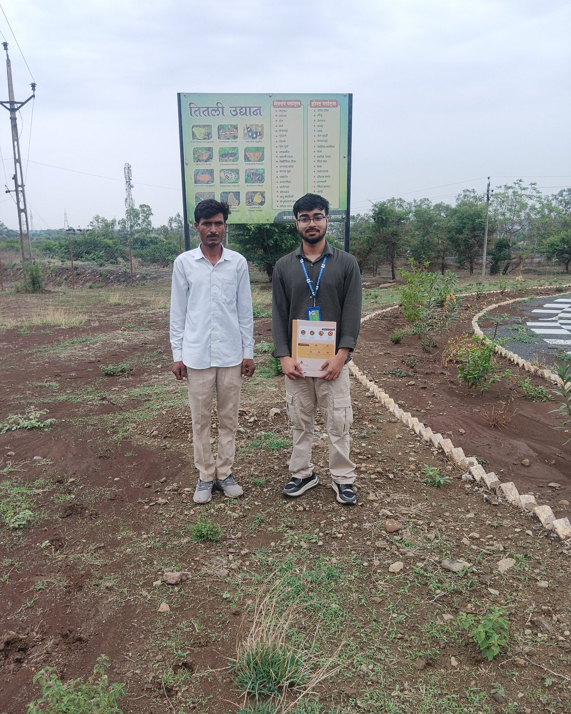

Research case study
Comprehensive Technical Assessment of Nagar Van and Nagar Vatika Yojana
Field-based assessment of urban forests and urban gardens across Uttar Pradesh, Madhya Pradesh and Rajasthan.
Field assessment conducted by Arkraj Biswas. Submitted to National CAMPA, Ministry of Environment, Forest and Climate Change.
Overview
Fourteen sites, three states, one question: what keeps a green space alive?
In 2026, I worked on a multi-site technical assessment of Nagar Van and Nagar Vatika sites across Uttar Pradesh, Madhya Pradesh and Rajasthan. The assessment brought together field observations, visitor feedback, stakeholder interviews, site inspections and geospatial analysis to examine both the physical condition of these green spaces and the practical challenges involved in maintaining them over time.
The work considered how site characteristics, access, amenities, water availability, maintenance arrangements, visitor experience and governance affect the long-term public and environmental value of urban forests and urban gardens.
A central question was not only how these spaces are established, but what arrangements are needed to keep them useful after the initial plantation and infrastructure work.
Scope and method
Inside the Assessment
Coverage
- 14 assessed sites
- 3 states
- June–August 2026
People consulted
- 106 visitor surveys
- 15 key-informant interviews
- 14 focus-group discussions
Spatial analysis
- QGIS
- Google Earth Engine
- Landsat 8/9 thermal imagery
The assessment combined structured visitor surveys, key-informant interviews, focus-group discussions and Participatory Rural Appraisal transect walks with geospatial boundary verification using KML data and GIS. QGIS and Google Earth Engine supported the spatial analysis, and Landsat 8/9 thermal imagery was used for a May 2021 versus May 2026 land-surface-temperature comparison — presented here as the method used, not as definitive proof of any particular temperature reduction.
Key themes
What the assessment examines
A. Establishment and long-term maintenance
The assessment identifies ongoing maintenance funding, irrigation, site upkeep and continuity of frontline operations as important considerations after the initial establishment phase.
B. Site conditions
Soil, water availability, location, access, infrastructure and ecological conditions differ across sites and can affect management requirements.
C. People and use
Visitor surveys, key-informant interviews and focus-group discussions were used to understand how people use the spaces and how they perceive facilities, satisfaction, safety and well-being.
D. Governance and sustainability
The assessment considers the roles of forestry departments, urban local bodies and community-management structures in maintaining these green spaces.
Recommendations
What the Assessment Recommends
The direction proposed by the assessment report — not official government policy or an implemented programme.
- More reliable, multi-year operational maintenance funding.
- Better continuity for irrigation and basic site upkeep.
- Clearer allocation of management responsibilities.
- Structured participation of relevant local bodies and community-management institutions.
- Stronger monitoring and accountability arrangements.
Interpretation
Scope and Limitations
This was a time-bounded assessment covering 14 selected sites across three states. Visitor surveys were conducted with people encountered during the field-assessment window, so the sample may not fully represent non-users or surrounding communities who did not visit these sites.
The satellite component compares selected Landsat 8/9 thermal scenes from May 2021 and May 2026. Differences in acquisition dates, seasonal conditions and thermal spatial resolution mean that land-surface-temperature differences should be interpreted cautiously. The comparison should not automatically be interpreted as a causal estimate of the programme's impact.
Field documentation
From the field


.jpg)
Figures 2–3 illustrate fieldwork practice; only Figure 1 is tied to a Nagar Van site visit.
Questions about this assessment?
Write with context — I read everything.